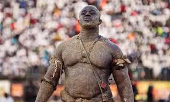
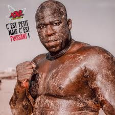
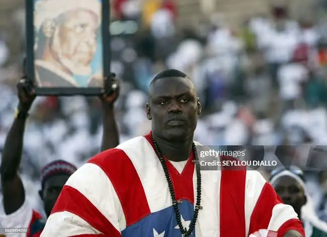

À propos de la lutte
La lutte est un sport qui mélange force, culture et histoire. C’est l’un des sports les plus populaires au Sénégal.
Lutteurs Légendaires
Modou lo

Balla Gaye 2

Yékini

La lutte est un sport qui mélange force, culture et histoire. C’est l’un des sports les plus populaires au Sénégal.


